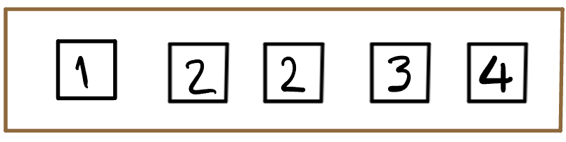

Probability Distributions
Some special distributions and visualizing probabilities
So far we have seen examples of outcome spaces, and descriptions of how we might compute probabilities, along with tabular representations of the probabilities. In this set of notes, we are going to talk about how to visualize probabilities using tables and histograms, as well as how to visualize simulations of outcomes from actions such as tossing coins or rolling dice.
Probability distributions and histograms
Probability distributions
Recall the example in which we drew a ticket from a box with 5 tickets in it:

If we draw one ticket at random from this box, we know that the probabilities of the four distinct outcomes can be listed in a table as:
| Outcome | \(1\) | \(2\) | \(3\) | \(4\) |
|---|---|---|---|---|
| Probability | \(\displaystyle \frac{1}{5}\) | \(\displaystyle \frac{2}{5}\) | \(\displaystyle \frac{1}{5}\) | \(\displaystyle \frac{1}{5}\) |
What we have described in the table above is a probability distribution. We have shown how the total probability of one or 100% is distributed among all the possible outcomes. Since the ticket \(\fbox{2}\) is twice as likely as any of the other outcomes, it gets twice as much of the probability.
Probability histograms
A table is nice, but a visual representation would be even better.
We have represented the distribution in the form of a histogram, with the areas of the bars representing probabilities. Notice that this histogram is different from the ones we have seen before, since we didn’t collect any data. We just defined the probabilities based on the outcomes, and then drew bars with the heights being the probabilities. This type of theoretical histogram is called a probability histogram.
Empirical histograms
What about if we don’t know the probability distribution of the outcomes of an experiment? For example, what if we didn’t know how to compute the probability distribution above? What could we do to get an idea of what the probabilities might be? Well, we could keep drawing tickets over and over again from the box, with replacement (that is, we put the selected tickets back before choosing again), keep track of the tickets we draw, and make a histogram of our results. This kind of histogram, which is the kind we have seen before, is a visual representation of data, and is called an empirical histogram.
On the x-axis of this histogram, we have the ticket values; on the y-axis, we have the proportion of times that this ticket was selected out of the 50 with-replacement draws we took.We can see that the sample proportions looks similar to the values given by the probability distribution, but there are some differences. For example, we appear to have drawn more \(3\)s and less \(4\)s than what was to be expected. It turns out that the counts and proportions of the drawn tickets are:
| Ticket | Number of times drawn | Proportion of times drawn |
|---|---|---|
| \(\fbox{1}\) | 10 | 0.2 |
| \(\fbox{2}\) | 24 | 0.48 |
| \(\fbox{3}\) | 10 | 0.2 |
| \(\fbox{4}\) | 6 | 0.12 |
What we have seen here is how when we draw at random, we get a sample that resembles the population, that is, a representative sample, but it isn’t exactly the true probabilities. If we increase our sample, however, say to 500, we will get something that more closely aligns with the truth.
Examples
Rolling a pair of dice and summing the spots
The outcomes are already numbers, so we don’t need to represent them differently. We know that there are \(36\) total possible equally likely outcomes when we roll a pair of dice, but when we add the spots, we have only 11 possible outcomes, which are not equally likely (the chance of seeing a \(2\) is \(1/36\), but \(P(6)=5/36\)).
The probability histogram will have the possible outcomes listed on the x-axis, and bars of width \(1\) over each possible outcome. The height of these bars will be the probability, so that the areas of the bars represent the probability of the value under the bar. The height, which is the probability, is written on the top of each bar.
What about the probability distribution? Make a table showing the probability distribution for rolling a pair of dice and summing the spots.
Check your answer
| Outcome | \(2\) | \(3\) | \(4\) | \(5\) | \(6\) | \(7\) | \(8\) | \(9\) | \(10\) | \(11\) | \(12\) |
|---|---|---|---|---|---|---|---|---|---|---|---|
| Probability | \(\displaystyle \frac{1}{36}\) | \(\displaystyle \frac{2}{36}\) | \(\displaystyle \frac{3}{36}\) | \(\displaystyle \frac{4}{36}\) | \(\displaystyle \frac{5}{36}\) | \(\displaystyle \frac{6}{36}\) | \(\displaystyle\frac{5}{36}\) | \(\displaystyle \frac{4}{36}\) | \(\displaystyle \frac{3}{36}\) | \(\displaystyle \frac{2}{36}\) | \(\displaystyle \frac{1}{36}\) |
Tossing a fair coin 3 times and counting the number of heads
We have seen that there are 8 equally likely outcomes from tossing a fair coin three times: \(\{HHH, HHT, HTH, THH, TTH, THT, HTT, TTT\}\). If we count the number of \(H\) in each outcome, and write down the probability distribution of the number of heads, we get:
| Outcome | \(0\) | \(1\) | \(2\) | \(3\) |
|---|---|---|---|---|
| Probability | \(\displaystyle \frac{1}{8}\) | \(\displaystyle \frac{3}{8}\) | \(\displaystyle \frac{3}{8}\) | \(\displaystyle \frac{1}{8}\) |
What would the probability histogram look like?
Check your answer
We are going to introduce some special distributions. We have seen most of these distributions, but will introduce some names and definitions. Before we do this, let’s recall how to count the number of outcomes for various experiments such as tossing coins or drawing tickets from a box (both with and without replacement).
Basic rule of counting
Recall that if we have multiple steps (say \(n\)) of some action, such that the \(j^{\text{th}}\) step has \(k_j\) outcomes; then the total number of outcomes is \(k_1 \times k_2 \times \ldots k_n\) and is obtained by multiplying the number of outcomes at each step. This principle is illustrated in the picture below: Geni the Gentoo penguin1 is trying to count how many outfits they have, if each outfit consists of a t-shirt and a pair of pants. The tree diagram below shows the number of possible outfits Geni can wear. In this example, \(n=2\), \(k_1 = 3\), and \(k_2 = 2\), since Geni has three t-shirts to choose from, and for each t-shirt, they have two pairs of pants, leading to a total of \(3 \times 2 = 6\) outfits.
This example seems trivial, but it illustrates the basic principle of counting: we get the total number of possible outcomes of an action that has multiple steps, by multiplying together the number of outcomes for each step. All the counting that follows in our notes applies this rule. For example, let’s suppose we are drawing tickets from a box which has tickets marked with the letters \(\fbox{C}\), \(\fbox{R}\), \(\fbox{A}\), \(\fbox{T}\), \(\fbox{E}\), and say we draw three letters with replacement (that means that we put each drawn ticket back, so the box is the same for each draw). How many possible sequences of three letters can we get? Using the counting rule,since we have \(5\) choices for the first letter, \(5\) for the second, and \(5\) for the third, we will have a total of \(5\times 5 \times 5 = 125\) possible words, allowing for repeated letters (that means that \(CCC\) is a possible outcome).
How many possible words are there if we draw without replacement? That is, we don’t put the drawn ticket back?
Check your answer
We have \(5\) choices for the first letter, \(4\) for the second, and \(3\) for the third, leading to \(5 \times 4 \times 3 = 60\) possible outcomes or words. Note that here we count the word \(CRA\) as different from the word \(CAR\). That is, the order in which we draw the letters matters.
We usually write the quantity \(5 \times 4 \times 3\) as \(\displaystyle \frac{5!}{2!}\) where \(n! = n\times(n-1)\times(n-2)\times \ldots \times 3 \times 2 \times 1\)
Counting the number of ways to select a subset
What if, in this example of selecting \(3\) letters without replacement from \(\fbox{C}\), \(\fbox{R}\), \(\fbox{A}\), \(\fbox{T}\), \(\fbox{E}\), the order does not matter - we don’t count the order in which the letters , just which letters were selected, that is, only the letters themselves matter. For example, the words \(CRA,\,CAR,\,ARC,\,ACR,\,RAC,\,RCA\) all count as the same word, so we will count all \(6\) words as the same subset of letters. We have to take the number that we got from earlier and divide it by the number of words that can be made from \(3\) letters (number of rearrangements), which is \(3 \times 2\times 1\). This gives us the number of ways that we can choose \(3\) letters out of \(5\), which is \[ \frac{\left(5!/2!\right)}{3!} = \frac{5!}{2!\; 3!}, \]
and is called the number of combinations of \(5\) things taken \(3\) at a time.
To recap: when we draw \(k\) items from \(n\) items without replacement, we have two cases: either we care in what order we draw the \(k\) items and the different arrangements of the same set of \(k\) items have to be counted separately. The number of such arrangements is called the permutations of \(n\) things taken \(k\) at a time. In the example above, we have \(5 \times 4\times 3 = 60\) ways of choosing \(3\) things out of \(5\) when we count every sequence as different.
- Permutations
- The number of possible arrangements or sequences of \(n\) things taken \(k\) at a time which is given by (the ordering matters): \[ \frac{n!}{(n-k)!} \]
- Combinations
- Number of ways to choose a subset of \(k\) things out of \(n\) possible things which is given by \[ \frac{n!}{k!\; (n-k)!} \] This number is just the number of distinct arrangements or permutations of \(n\) things taken \(k\) at a time divided by the number of arrangements of \(k\) things. It is denoted by \(\displaystyle \binom{n}{k}\), which is read as “n choose k”.
Example How many ways can I deal \(5\) cards from a standard deck of 52 cards?
Check your answer
When we deal cards, order does not matter, so this number is \(\displaystyle \binom{52}{5} = \frac{52!}{(52-5)!5!} = 2,598,960\).
Special distributions
There are some important special distributions that every student of probability must know. Here are a few, and we will learn some more later in the course. We have already seen most of these distributions. All we are doing now is identifying their names. First, we need a vocabulary term:
- Parameter of a probability distribution
- A constant(s) number associated with the distribution. If you know the parameters of a probability distribution, then you can compute the probabilities of all the possible outcomes.
Each of the distributions we will cover below has a parameter(s) associated with it.
Discrete uniform distribution
This is the probability distribution over the numbers \(1, 2, 3 \ldots, n\). We have seen it for dice above. This probability distribution is called the discrete uniform probability distribution, since each possible outcome has the same probability, that is, \(1/n\). We call \(n\) the parameter of the discrete uniform distribution.
Bernoulli distribution
This is a probability distribution describing the probabilities associated with binary outcomes that result from one action, such as one coin toss that can either land Heads or Tails. We can represent the action as drawing one ticket from a box with tickets marked \(\fbox{1}\) or \(\fbox{0}\), where the probability of \(\fbox{1}\) is \(p\), and therefore, the probability of \(\fbox{0}\) is \((1-p)\). We have already seen some examples of probability histograms for this distribution. We usually think of the possible outcomes of a Bernoulli distribution as success and failure, and represent a success by \(\fbox{1}\) and a failure by \(\fbox{0}\).
For the Bernoulli distribution, our parameter is \(p = P\left(\fbox{1}\right)\). If we know \(p\), we also know the probability of drawing a ticket marked \(\fbox{0}\).
In the figure above, the first histogram is for a Bernoulli distribution with parameter \(p = 1/2\), the second \(p=3/4\), and the third has \(p = 2/3\).
Binomial Distribution
The binomial distribution, which describes the total number of successes in a sequence of \(n\) independent Bernoulli trials, is one of the most important probability distributions. For example, consider the outcomes from tossing a coin \(n\) times and counting the total number of heads across all \(n\) tosses, where the probability of heads on each toss is \(p\). Each toss is one Bernoulli trial, where a success would be the coin landing heads. The binomial distribution describes the probabilities of the total number of heads in three tosses. We saw what this distribution looks like in the case where \(n = 3\) for three tosses of a fair coin.
What would the probability distribution and histogram for the number of heads in three tosses of a biased coin like, where \(P(H) = 2/3\)? Make sure you know how the probabilities are computed. For example, \(P(HHH) = (2/3)^3 = 8/27\).
Check your answer
Note that the outcomes \(HHT, HTH, THH\) all have the same probability, as do the outcomes \(TTH, THT, HTT\), since the probability only depends on how many heads and how many tails we see in three tosses, not the order in which we see them. We get the probability of 2 heads in 3 tosses by adding the probabilities of all three outcomes \(HHT, HTH, THH\), since they are mutually exclusive. (In three tosses, we can see exactly one of the possible 8 sequences listed above.)
More generally, suppose that we have \(n\) independent trials, where each trial can either result in a “success” (like drawing a ticket marked \(\fbox{1}\)) with probability \(p\); or a “failure” (like drawing \(\fbox{0}\)) with probability \(1-p\). In the case of the Bernoulli distribution, \(n = 1\).
The multiplication rule for independent events tells us how to compute the probability of a sequence that consisted of the first \(k\) trials being successes and the rest of the \(n-k\) trials being failures. The probability of this particular sequence of \(k\) successes followed by \(n-k\) failures is (by multiplying their probabilities) given by: \[ p^k \times (1-p)^{n-k} \] Now this is the probability of one particular sequence: \(SSS\ldots SSFF \ldots FFF\), but as we saw in the example above, only the number of successes and failures matter, not the particular order. So every sequence of \(n\) trials in which we have \(k\) successes and \(n-k\) failures has the same probability.
How many such sequences are there? We can count them using our rules above. We have \(n\) spots in the sequence, of which \(k\) have to be successes. The number of such sequences of length \(n\) consisting of \(k\) \(S\)’s and \(n-k\) \(F\)’s) is given by \(\displaystyle \binom{n}{k}\). Each such sequence has probability \(\displaystyle p^k \times (1-p)^{n-k}\). Adding up all these \(\displaystyle \binom{n}{k}\) probabilities (of each such sequence) gives us the formula for the probability of \(k\) successes in \(n\) trials: \[ \binom{n}{k} \times p^k \times (1-p)^{n-k} \]
The probability distribution described by the above formula is called the binomial distribution. It is named after \(\displaystyle \binom{n}{k}\), which is called the binomial coefficient. The binomial distribution has two parameters: the number of trials \(n\) and the probability of success on each trial, \(p\).
Example
Toss a weighted coin, where \(P(\text{heads}) = .7\) five times. What is the probability that you see exactly four heads across these five tosses?
Check your answer
Across five trials, we need to see four heads and one tails. Since each toss is independent, one possible way to obtain what we are looking for is \(HHHHT\). This is given by
\[ (.7)^4 \times (.3)^1 \]
However, we need to consider all the possible orderings of tosses that involve four heads and one tail. This is given by the binomial coefficient \(\binom{5}{4}\). Our final probability is therefore:
\[ \binom{5}{4} (.7)^4 \times (.3)^1 \approx 0.36 \]Hypergeometric distribution
In the binomial scenario described above, we had \(n\) independent trials, where each trial resulted in a success or a failure. This is like sampling with replacement from a box of \(0\)’s and \(1\)’s. Now consider the situation when we have a box with \(N\) tickets marked with either \(\fbox{0}\) or \(\fbox{1}\).
As usual, the ticket marked \(\fbox{1}\) represents a success. Say the box has \(G\) tickets marked \(\fbox{1}\) (and therefore \(N-G\) tickets marked \(\fbox{0}\) representing failures). Suppose we draw a simple random sample of size \(n\) from this box. A simple random sample is a sample drawn without replacement, and on each draw, every ticket is equally likely to be selected from among the remaining tickets. Then, the probability of drawing a ticket marked \(\fbox{1}\) changes from draw to draw.
What is the probability that we will have exactly \(k\) successes among these \(n\) draws? The probability distribution that gives us this answer is given by
\[ \frac{\binom{G}{k}\times \binom{N-G}{n-k}}{\binom{N}{n}} \]
and is called the hypergeometric distribution. It has three parameters, \(n\), \(N\) and \(G\). This is a wacky formula, so let’s explain it piece by piece, starting with the numerator and then moving to the denominator!
Numerator
We count the number of samples drawn without replacement that have \(k\) tickets marked \(\fbox{1}\). Since there are \(G\) tickets marked \(\fbox{1}\) in the box, and \(\displaystyle \binom{G}{k}\) ways to choose exactly \(k\) of them. Similarly, there are \(N-G\) tickets marked \(\fbox{0}\) in the box, and \(\displaystyle \binom{N-G}{n-k}\) ways to choose exactly \(n-k\) of them. The total number of ways to have \(k\) \(\fbox{1}\)s and \(n-k\) \(\fbox{0}\)s is therefore (by multiplication):
\[ \binom{G}{k}\times \binom{N-G}{n-k} \]
Denominator
We count the total number of simple random samples of size \(n\) that can be drawn from a pool of \(N\) observations. This is given by \(\displaystyle \binom{N}{n}\).
Example
Say we have a box of \(10\) tickets consisting of \(4\) tickets marked \(\fbox{0}\) and \(6\) tickets marked \(\fbox{1}\), and draw a simple random sample of size \(3\) from this box.
What is the probability that two of the tickets drawn are marked \(\fbox{1}\)?
Check your answer
We draw \(3\) tickets without replacement. We need two of these tickets to be marked \(\fbox{1}\) and there are six in total to choose from; we need one of them to be marked \(\fbox{0}\) and there are four in total to choose from. Therefore, there are
\[ \binom{6}{2}\times \binom{4}{1} = 60 \] different ways to pick three tickets in this manner.
How many total ways are there to draw \(n=3\) tickets from a box of \(N=10\)? This is given by \(\binom{10}{3} = 120\).
Therefore, our final answer is given by
\[ \frac{\binom{6}{2}\times \binom{4}{1}}{\binom{10}{3}} = \frac{60}{120} = \frac{1}{2} \]
Binomial vs Hypergeometric distributions
Both these distributions deal with:
a fixed number of trials, or instances of the random experiment;
outcomes that are deemed either successes or failures.
The difference is that for a binomial random variable, the probability of a success stays the same for each trial, and for a hypergeometric random variable, the probability changes with each trial.
The Ideas in Code
Before discussing how to simulate the distributions, we are going to introduce three more useful functions.
Three useful functions
1. rep(): replicates values in a vector
Sometimes we need to create vectors with repeated values. In these cases, rep() is very useful.
-
Arguments
-
x: the vector or list that is to be repeated. This must be specified -
times: the number of times we should repeat the elements ofx. This could be a vector the same length asxdetailing how many times each element is to be repeated, or it could be a single number, in which case the entirexis repeated that many times. -
each: the default is 1, and if specified, each element ofxis repeatedeachtimes.
-
2. replicate(): repeat a specific set of tasks a large number of times.
-
Arguments
-
n: the number of times we want to repeat the task. This must be specified -
expr: the task we want to repeat, usually an expression that is some combinations of functions, for example, maybe we take a sample from a vector, and then sum the sample values.
-
3. geom_col(): plotting with probability
When plotting probability histograms, we know exactly what the the height of each bar should be. This is as opposed to the bar charts you have seen before (and empirical histograms), where we are just trying to visualize the data that we have collected.
geom_col() creates a bar chart in which the heights represent numbers that can be specified via an aesthetic. In other words, the y variable will appear in our call to aes()!
Example: Rolling a die twice and summing the spots
Code along
As you read through the code in this section, keep RStudio open in another window to code along at the console. Keep in mind that we use set.seed() more than once for demonstration purposes only.
Suppose we want to simulate the task of rolling a pair of die and summing the two spots. We can accomplish this task and examine our results using the functions we have just introduced. First, we will make a vector representing a fair, six-sided die.
die <- seq(from = 1, to = 6, by = 1)Obtaining a sum
Method 1 - replicate()
We can use the sample() function to roll the die twice; this will output a vector with two die numbers. Then, we can take the sum of this vector by nesting the call to sample() inside of sum.
If we would like to repeat this action many times (for instance, in a game of Monopoly, each player has to roll two dice on their turn and sum the spots), the replicate() function will come in handy. In the following line of code, we obtain 10 sums.
Method 2 - rep()
We could also roll the die in advance and then sample from the possible sums: 2 through 12. However, when rolling the two die, there is only one way to get a sum of \(2\) (both dice need to be one), but six ways to get a sum of \(7\). This shows that if we want to represent this action of rolling a pair of dice and taking the sum of spots, we have to use a box in which values will be repeated to reflect their probability. We can use the times argument of the rep() function to make such a box. The number \(2\) is repeated once, the number \(3\) is repeated twice, and so on until the number \(7\) is repeated six times. We can then sample once from this box.
possible_sums <- seq(from = 2, by = 1, to = 12)
correct_sums <- rep(possible_sums,
times = c(1,2, 3, 4, 5, 6, 5, 4, 3, 2, 1))
correct_sums [1] 2 3 3 4 4 4 5 5 5 5 6 6 6 6 6 7 7 7 7 7 7 8 8 8 8
[26] 8 9 9 9 9 10 10 10 11 11 12To get 10 sums as we did before, we just need to sample with ten times with replacement from this new box, correct_sums.
sample(x = correct_sums, size = 10, replace = TRUE) [1] 7 4 8 9 2 7 4 7 6 8Visualizing our results
Making a probability histogram with geom_col()
First, let’s create a vector with the probabilities associated with each possible that can be obtained from rolling two dice. We are taking these probabilities from the drawn probability histogram earlier in the notes.
prob_sums <- c(1,2,3,4,5,6,5,4,3,2,1)/36Now, using the above and the possible_sums vector from before, we can make a data frame with the information about the probability distribution and create a probability histogram, which in turn can be used to make a plot with geom_col().
prob_hist <- data.frame(possible_sums, prob_sums) |>
ggplot(mapping = aes(x = factor(possible_sums),
y = prob_sums)) +
geom_col(fill = "goldenrod") +
labs(x = "sum value",
y = "probability")
prob_histThe use of factor() is to make sure that for the purposes of the plot, that the sum values are treated categorically.
Performing a simulation and making an empirical histogram
Let’s simulate rolling two die and and computing a sum fifty times Then, we can make a data frame out of our results and find the total amount of rolls, grouped by face. This can be done with the n() summary function– and if we divide by 50, we can get the sample proportions of each sum.
empirical <- data.frame(results) |>
group_by(results) |>
summarise(props = n()/50)
empirical# A tibble: 11 × 2
results props
<dbl> <dbl>
1 2 0.04
2 3 0.02
3 4 0.06
4 5 0.1
5 6 0.08
6 7 0.24
7 8 0.1
8 9 0.12
9 10 0.14
10 11 0.08
11 12 0.02Now, we can construct an empirical histogram using the empirical data frame.
emp_50 <- empirical |>
ggplot(mapping = aes(x = factor(results),
y = props)) +
geom_col(fill = "blue") +
labs(x = "sum value",
y = "sample proportion")
emp_50Comparing our results to the truth
You may have wondered why we bothered to save the plot objects. The reason is that we can use a nifty library called patchwork which will help us to more easily visualize multiple plots at once by using mathematical and logical syntax. For instance, using + will put plots side by side.
With only 50 experiments run, we see that the empirical histogram doesn’t quite match. However, modify the above code by increasing the number of repetitions, and you will see the empirical histogram begin to resemble more closely true probability distribution. This is an example of long-run relative frequency.
Summary
- Defined probability distributions
- Stated the basic counting principle and introduced permutations and combinations
- Defined some famous named distributions (Bernoulli, discrete uniform, binomial, hypergeometric)
- Visualized probability distributions using probability histograms
- Looked at the relationship between empirical histograms and probability histograms.
- Introduced functions
rep(),replicate(),geom_col() - Simulated random experiments such as die rolls and coin tosses to visualize the distributions.
Footnotes
Penguin taken from art by @allison_horst↩︎